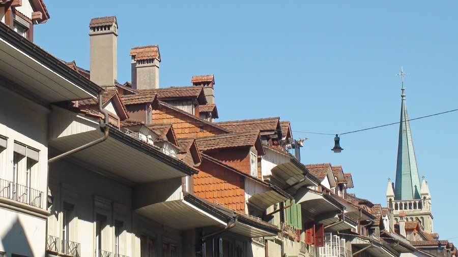
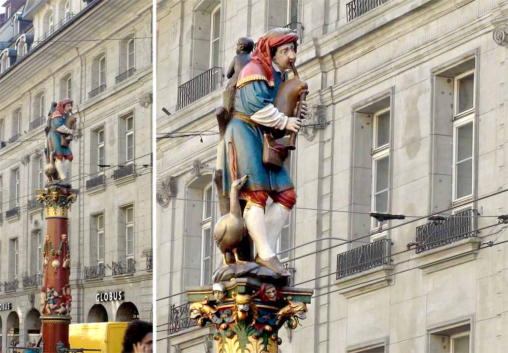
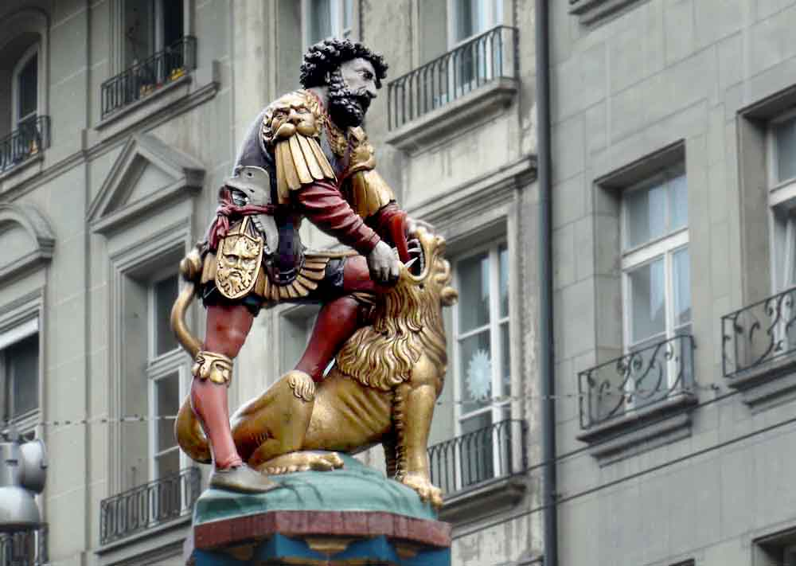
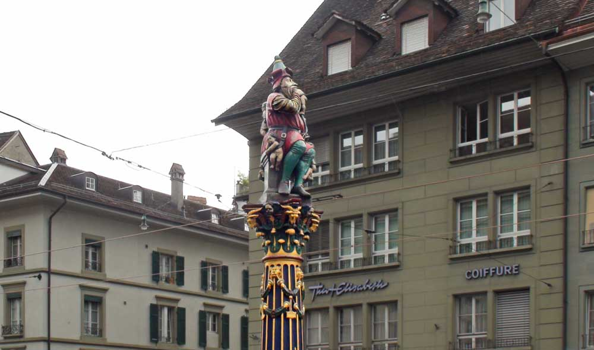
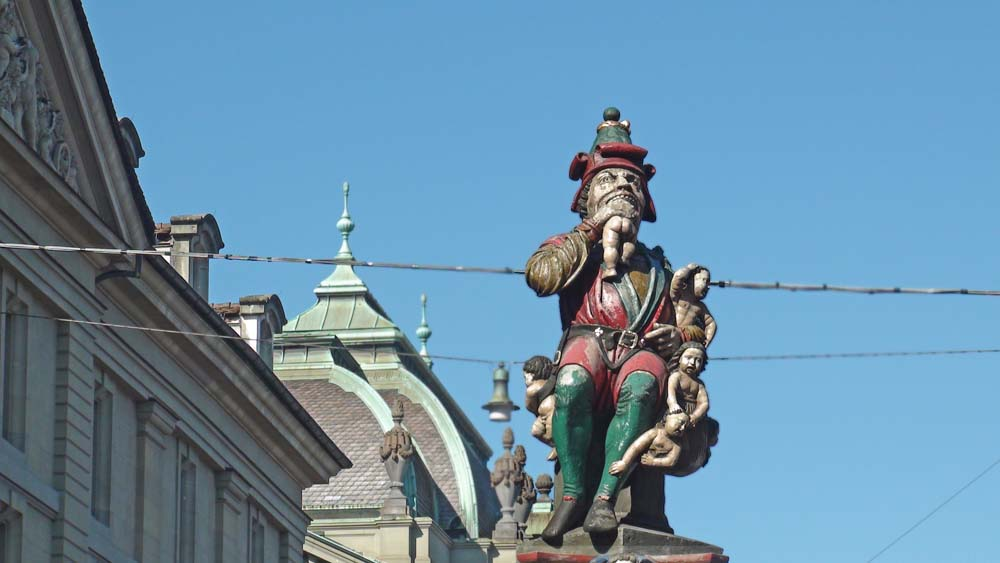
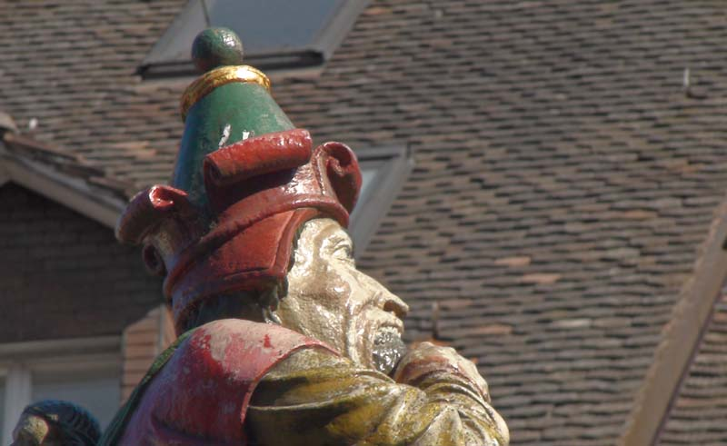
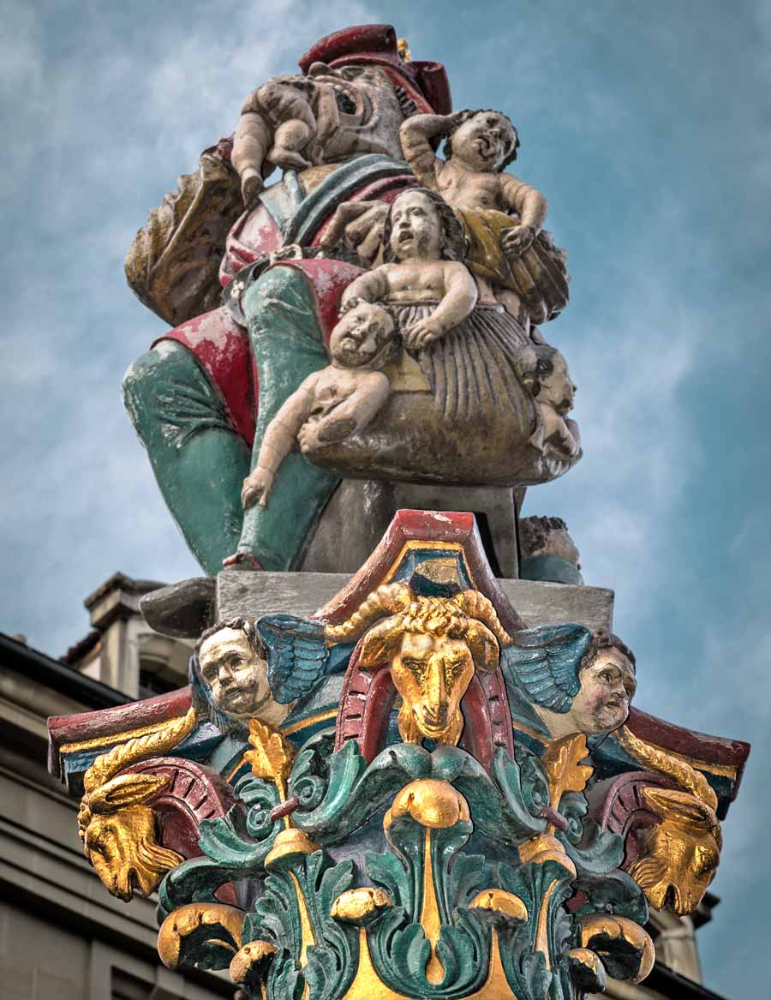
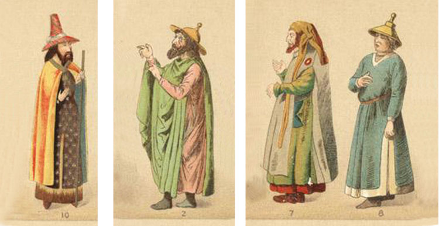
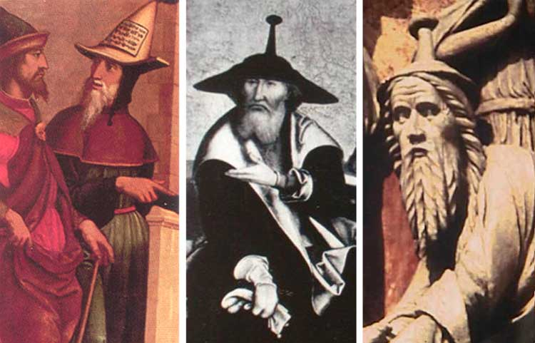
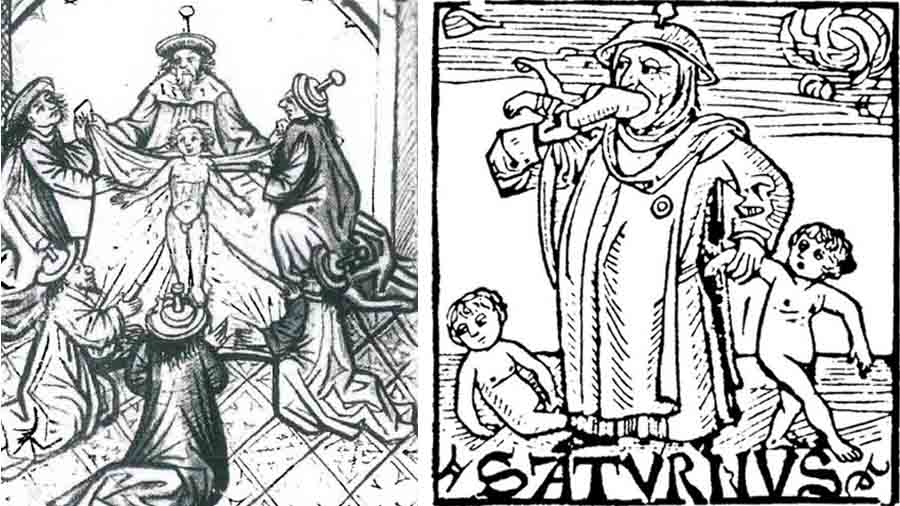

Kinderfresser, the Child Eater
In many countries, for centuries, there were characters used to frighten children when they did not obey. The Kinderfresser (German: child eater) is one of them. (In place of an epigraph)
Author: Ephraim Kalish (photos by the author)

Once, on our first visit to Switzerland, we happened to be strolling through Bern with our friend Ursula. A cosy town, the capital of neutral Switzerland. We were a little lulled by its modest, quiet beauty.

I must admit that my attention had grown a little dull from the abundance of sights, and I was listening to Ursula with half an ear. But on the Kornhausplatz (one of the central squares of Bern) I suddenly came back to life when I heard the words "it was yellow". The words were said about the figure that crowns one of Bern's many fountains. I asked her to repeat it. "Originally this gentleman's hat was painted yellow," Ursula repeated shyly, "and he was made in 1546 by Hans Gieng."
Very interesting. A pointed yellow hat. Hmm. It is as recognisable a sign as the yellow badge in the shape of the six-pointed Star of David later became. By it, as by the pointed hat (most often yellow), passers-by were informed that its owner was a Jew.

There are quite a few drinking-water fountains in the old town. In the centre of each stands a column crowned with some figure. It may be a biblical character, a national hero of Switzerland, a knight, a burgomaster, or a representative of a craftsmen's guild. The Kinderfresser is the oldest (16th century) and the best known of all the fountains of Bern.
When a town in Christian Europe is adorned with biblical characters, that is quite understandable. The burghers' wish to glorify their class or their leaders is understandable too. But what is Saturn doing in the centre of Bern?


Even against the colourful background of the figures adorning the drinking fountains, the Kinderfresser stands out for its extravagance. There are various interpretations of the figure: from the association that first comes to mind, Kronos (Saturn) devouring his children, to an image of the Swiss government sending the sons of Switzerland to the slaughter as paid mercenaries. All this may well be true, if one leaves aside the detail Ursula had already pointed out. Our hero wears the characteristic pointed Jewish hat. And it is known for certain that the hat was originally yellow. This colour was the obligatory distinguishing mark of Jewish dress in medieval Europe.


And one more distinctive detail: the Corinthian capital on which the Kinderfresser sits is decorated with goats' heads. This attribute accompanies images of Jews in Europe on the walls and stained-glass windows of cathedrals and on the pages of manuscripts. In many cases, when the allegory of the humiliated Synagogue was set against the militant and triumphant allegory of the Church, this same Synagogue was shown together with a goat's head.


It was the yellow pointed hat that put everything in its place for me. This mark served specifically as a sign of distinction that Jews were obliged to wear (a royal decree forced them to). There is no better character for frightening children, for "educational" purposes, than the hated Jew with his eternal "need" to bake matzah with the fresh blood of Christian babies. Remember how in the USSR children were frightened with the "policeman uncle". A child eater is much scarier. If you search the subject, you will find medieval Christian writers who seriously derived the wicked and harmful qualities of the Jews from the character of their god Saturn: the same black blood flows in them, they claimed, and their soul is as black as their blood.

The Kinderfresser did not appear on a street in Bern by chance. He was, so to speak, a local hero. His prototype was a certain Jew who lived in the 13th century. A chronicler reports the ritual murder of a Christian boy by Jews and his martyr's death in Bern in 1288. Later it turned out that this was yet another blood libel, but by then no one was interested. The explanation was very simple:
Wishing to improve their financial position, the townspeople of Bern decided to free themselves of their obligations to their Jewish creditors. The pretext for the pogroms and the expulsion of the Jews in 1294 was a false accusation against a Jew named Joel of the ritual murder of a Christian boy, Rudolf. Together with him, all the Jews of Bern suffered: some died a martyr's death, the rest were driven out of the city.
Since then there have been times when the only Jew in Bern who had been neither driven out nor killed was that very child eater in the central square of Bern.
Today the Kinderfresser's hat has been repainted green, so that no unwanted associations arise. Enlightened, liberal, democratic Europe, after all. But, as the saying goes, you cannot take the words out of a song. To this day my kinsman, in the image of Saturn, "adorns" the oldest fountain of Bern. And to this day he is crowned with a pointed Jewish hat, even if it has been repainted another colour.
Here you can see the wonderful city of Bern through my eyes: